Disentangling Architecture and Training for Optical Flow
| Deqing Sun | Charles Herrmann | Fitsum Reda |
| Michael Rubinstein | David Fleet | William T. Freeman |
| Google Research |
| | Paper | Code | |
| 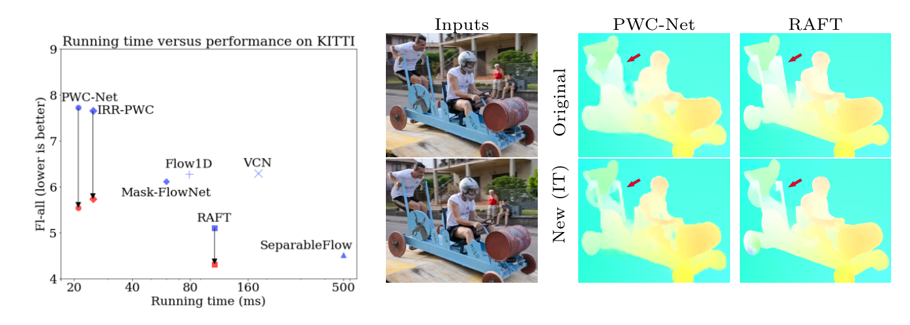 |
|
Left: Large improvements with newly trained PWC-Net, IRR-PWC and RAFT. (left: originally published results in blue; results of our newly trained models in red). The newly trained RAFT is more accurate than all published methods on KITTI 2015 at the time of writing. Right: Visual comparison on a Davis sequence: between the original [43] and our newly trained PWC-Net and RAFT, shows improved flow details, e.g. the hole between the cart and the person at the back. The newly trained PWC-Net recovers the hole between the cart and the front person better than RAFT. |
Abstract
How important are training details and datasets to recent optical flow models
like RAFT? And do they generalize? To explore these questions, rather than
develop a new model, we revisit three prominent models, PWC-Net, IRR-PWC and
RAFT, with a common set of modern training techniques and datasets, and observe
significant performance gains, demonstrating the importance and generality of
these training details. Our newly trained PWC-Net and IRR-PWC models show
surprisingly large improvements, up to 30% versus original published results on
Sintel and KITTI 2015 benchmarks. They outperform the more recent Flow1D
on KITTI 2015 while being 3× faster during inference. Our newly trained RAFT
achieves an Fl-all score of 4.31% on KITTI 2015, more accurate than all published
optical flow methods at the time of writing. Our results demonstrate the benefits
of separating the contributions of models, training techniques and datasets when
analyzing performance gains of optical flow methods. Our source code will be
publicly available
Papers
 |
"Disentangling Architecture and Training for Optical Flow" |
Code
 |
Bibtex
@inproceedings{sun2022disentangling,
title={Disentangling Architecture and Training for Optical Flow},
author={Sun, Deqing and Herrmann, Charles and Reda, Fitsum and Rubinstein, Michael
and Fleet, David J. and Freeman, William T},
booktitle={ECCV},
year={2022}
}
AutoFlow: Learning a Better Training Set for Optical Flow
| Deqing Sun | Daniel Vlasic | Charles Herrmann | Varun Jampani | Michael Krainin | Huiwen Chang |
| Ramin Zabih | William T. Freeman | Ce Liu |
| Google Research |
| | Paper | Samples | Code (available now!) | Dataset (available now!) | |
| 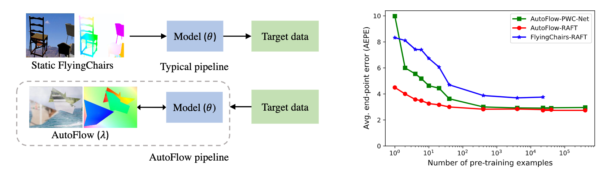 |
|
Left: Pipelines for optical flow. A typical pipeline pre-trains models on static datasets,e.g., FlyingChairs, and then evaluates the performance on a target dataset,e.g., Sintel. AutoFlow learns pre-training data which is optimized ona target dataset. Right: Accuracy w.r.t. number of pre-training examples on Sintel.final. Four AutoFlow pre-training examples with augmentation achieve lower errors than 22,872 FlyingChairs pre-training examples with augmentation. The gap between PWC-Net and RAFT becomes small when pre-trained on enough AutoFlow examples. |
Abstract
Synthetic datasets play a critical role in pre-training CNN models for optical flow, but they are painstaking to generate and hard to adapt to new applications. To automate the process, we present AutoFlow, a simple and effective method to render training data for optical flow that optimizes the performance of a model on a target dataset. AutoFlow takes a layered approach to render synthetic data, where the motion, shape, and appearance of each layer are controlled by learnable hyperparameters. Experimental results show that AutoFlow achieves state-of-the-art accuracy in pre-training both PWC-Net and RAFT.
Papers
 |
"AutoFlow: Learning a Better Training Set for Optical Flow" |
Samples
| 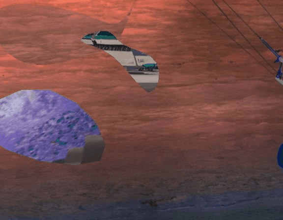 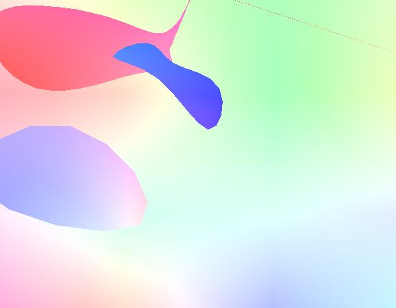 | 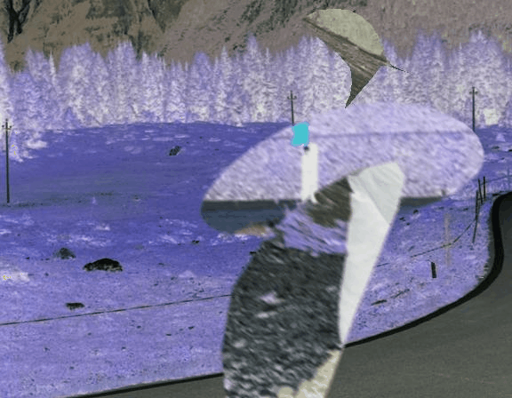 | 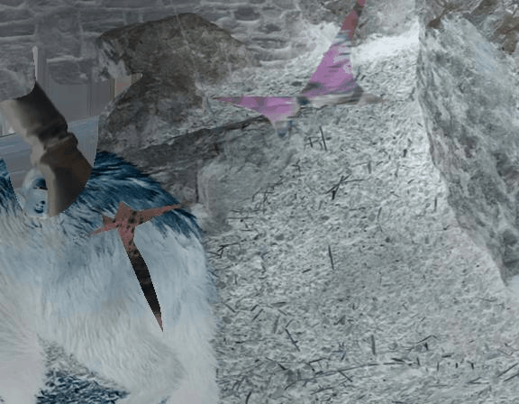 | 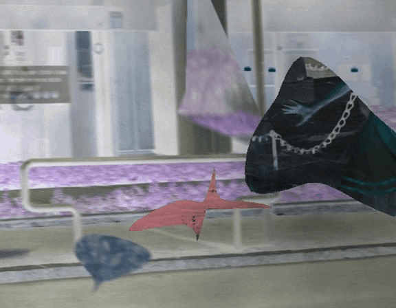 | 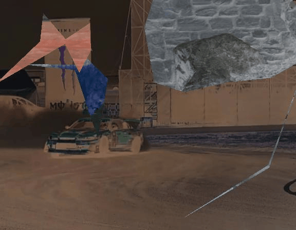 | 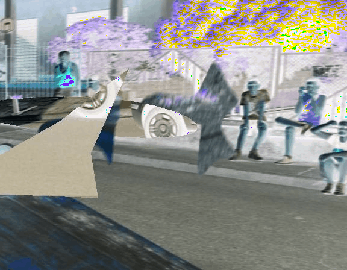 | 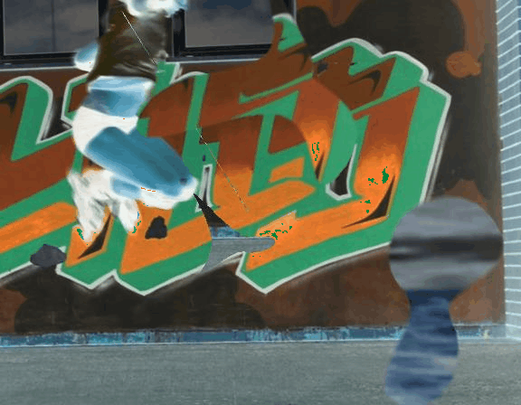 |
Code
|
Dataset
| 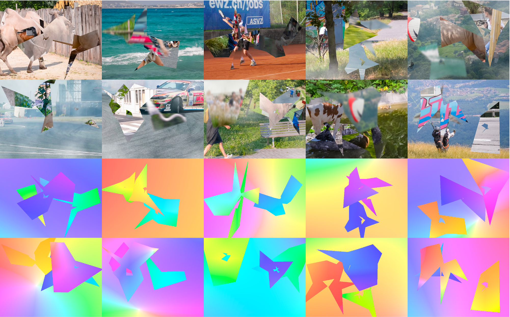 |
Bibtex
@inproceedings{sun2021autoflow,
title={AutoFlow: Learning a Better Training Set for Optical Flow},
author={Sun, Deqing and Vlasic, Daniel and Herrmann, Charles and Jampani, Varun and Krainin, Michael
and Chang, Huiwen and Zabih, Ramin and Freeman, William T and Liu, Ce},
booktitle={CVPR},
year={2021}
}